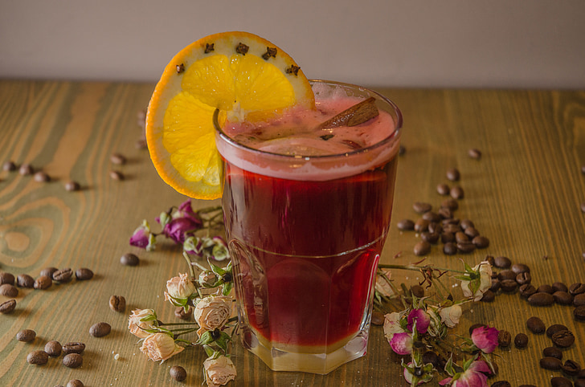

Fine Spiced Wine

Description
This spices wine recipe is very old. The wine can be further mixed with honey and other ingredients to make Honey refresher for travellers.
Ingredients
- 6 SEXTARII OF HONEY
- 2 SEXTARII OF WINE
- A DASH OF COLD WINE
- 4 OZS OF CRUSHED PEPPER
- 3 SCRUPLES OF MASTICH
- A DRACHM OF LAUREL LEAVES
- A DRACHM OF SAFFRON
- 5 DRACHMS OF ROASTED DATE STONES CRUSHED AND PREVIOUSLY SOAKED IN WINE
- 18 SEXTARII OF LIGHT WINE
- CRUSHED CHARCOAL (OPTIONAL)
Steps
- INTO A COPPER BOWL PUT 6 SEXTARII OF HONEY AND 2 SEXTARII OF WINE
- HEAT ON A SLOW FIRE, CONSTANTLY STIRRING THE MIXTURE WITH A WHIP
- AT THE BOILING POINT ADD A DASH OF COLD WINE, RETIRE FROM STOVE AND SKIM
- REPEAT THIS TWICE OR THREE TIMES, LET IT REST TILL THE NEXT DAY, AND SKIM AGAIN
- THEN ADD 4 OZS. OF CRUSHED PEPPER, 3 SCRUPLES OF MASTICH, A DRACHM EACH OF LAUREL LEAVES AND SAFFRON, 5 DRACHMS OF ROASTED DATE STONES CRUSHED AND PREVIOUSLY SOAKED IN WINE TO SOFTEN THEM
- WHEN THIS IS PROPERLY DONE ADD 18 SEXTARII OF LIGHT WINE
- TO CLARIFY IT PERFECTLY, ADD CRUSHED CHARCOAL TWICE OR AS OFTEN AS NECESSARY WHICH WILL DRAW THE RESIDUE TOGETHER
Back to main page